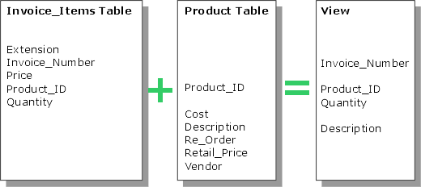

Define an Alpha Anywhere View Query
This procedure is part of the procedure for building a grid component.
A view is similar to an Alpha Anywhere set or SQL join. It combines selected fields from two or more tables that are linked in one-to-one or one-to-many relationships.

 Note : When you are
displaying data from two tables linking in a one-to-many parent-child
relationship, you have two alternatives when designing the view.
Note : When you are
displaying data from two tables linking in a one-to-many parent-child
relationship, you have two alternatives when designing the view.
"One" table as parent, "Many" table as child - creates as many records as there are in the "One" table.
"Many" table as parent, "One" table as child - creates as many records as there are in the "Many" table. This is essentially the same as flattening a set.
Select Grid > Query (DBF).
Click Tables in View to display the Add Table dialog box.
Select the table from the Table Name list.
Optionally, provide an alternative name for the table in the Alias field.
Click OK to add the table or Cancel to discard your inputs.
After the first table has been added, the Define Join dialog box appears.
Select the parent table in the relationship and click Add Table to display the Add Table dialog box.
"One-to-first"
"One-to-last"
"One-to-closest"
"Always"
"Only if Matching Child Exists"
"Only if Matching Child Does Not Exist"
Repeat step 7 for each additional child table that you want to include in the view.
Click OK to continue or Cancel to discard your inputs.
In the Grid Builder click Fields in View to display the Select Fields in View dialog box.
Use the >, >>, <, and << buttons to add and remove fields from the available fields list.
Optionally, use the
 and
and  buttons to sort the list of fields.
buttons to sort the list of fields.Optionally, use the
 ,
,  ,
,  and
and  buttons
to reorganize the sequence of fields.
buttons
to reorganize the sequence of fields.Click OK to continue or Cancel to discard your inputs.
Optionally, if you want to provide a value for use in the grid's filter expression, click Define Arguments to display the Define Arguments dialog box.
Optionally, enter a logical expression that selects records from the table into the Filter field. You may click
 to use
the
Expression Builder to help you define the expression. A blank filter expression
retrieves all records in the table.
to use
the
Expression Builder to help you define the expression. A blank filter expression
retrieves all records in the table.Optionally, check Unique records only to eliminate records with duplicate values.
Optionally, enter a character expression that orders selected records into the Order field. You may click
 to use the
Order Builder to help you define the expression.
A blank order expression retrieves records in record number order.
to use the
Order Builder to help you define the expression.
A blank order expression retrieves records in record number order.Optionally, click Ascending or Descending to change the sequence of records.
Optionally, check Read only to indicate that you do not need to define a primary key.
Click Define Primary Key(s) to define the field or character expression that will uniquely identify records.
See Next
Selecting the Fields to Display
Limitations
Web publishing applications only.